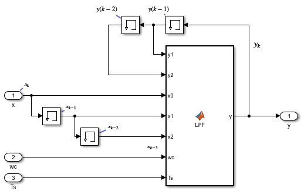
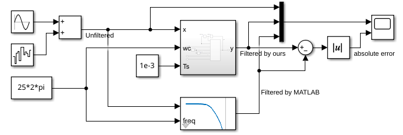
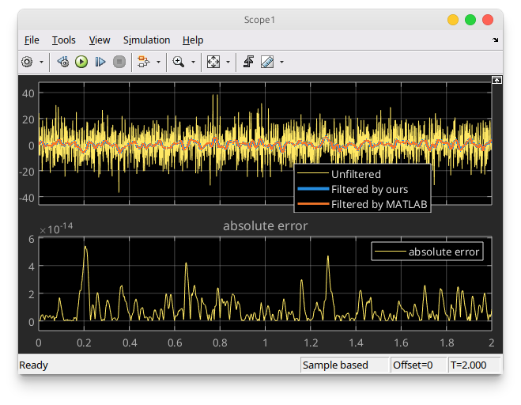

Digital Low-Pass Filter#
In this section, we are going to do the following activities:
discretize a continuous-time low-pass filter by using bilinear transform (trapezoidal or Tustin) method
implement the discretized low-pass filter into MATLAB Simulink
compare the results from the implemented discrete low-pass filter to the shipped discrete low-pass filter in MATLAB Simulink
Required Imports#
from IPython.core.display import HTML
from sympy import *
from mathprint import *
Ts, tau = symbols('T_s tau', positive=True)
s = symbols('s', complex=True)
z = symbols('z')
wc = symbols('omega_c', positive=True)
x, y = symbols('x y')
x0, x1, x2, x3 = symbols('x_k x_{k-1} x_{k-2} x_{k-3}')
y0, y1, y2, y3 = symbols('y_k y_{k-1} y_{k-2} y_{k-3}')
First-Order Low-Pass Filter#
Transfer function of a first order lowpass filter (time-constant filter):
where \(\tau\) is the filter time constant (in seconds).
Discretization with Bilinear Transformation#
Next, we transform \(s\) into \(z\) by applying the following substitution.
H = 1 / (tau*s+1)
mprint('H=',latex(H))
H = H.subs(1/s, Ts/2 * (z+1)/(z-1))
mprint('H=',latex(H))
Let us define \(x\) as the input to the filter and \(y\) as the output (filtered input).
eq = Eq(y, H * x)
mprint(latex(eq))
eq = simplify(eq)
mprint(latex(eq))
eq = Eq(numer(eq.rhs), expand(eq.lhs * denom(eq.rhs)))
mprint(latex(eq))
eq =expand(Eq(numer(eq.rhs)/z/Ts, eq.lhs * denom(eq.rhs)/z/Ts))
mprint(latex(eq))
Apply the following substitutions:
\(y\) becomes \(y_{k}\)
\(y/z\) becomes \(y_{k-1}\)
\(x\) becomes \(x_{k}\)
\(x/z\) becomes \(x_{k-1}\)
eq = eq.subs(x/z**3, x3).subs(x/z**2, x2).subs(x/z, x1).subs(x, x0).subs(y/z**3, y3).subs(y/z**2, y2).subs(y/z, y1).subs(y, y0)
mprint("\\small ", latex(eq))
Finally, by grouping the variables, we obtain:
eq = Eq(collect(eq.rhs, [x0, x1, x2, x3]), collect(eq.lhs, [y0, y1, y2, y3]) )
mprintb("\\small ", latex(eq))
Second Order Low-Pass Butterworth Filter#
Transfer function of a second order lowpass filter (Butterworth):
where \(\omega_c\) is the filter cut-off frequency (in Hz).
Discretization with Bilinear Transformation#
Similiar to the previous section, here we also transform \(s\) into \(z\) by applying the following substitution.
H = wc**2 / (wc**2+sqrt(2)*s*wc+s**2)
mprint('H=',latex(H))
H = H.subs(1/s, Ts/2 * (z+1)/(z-1))
mprint('H=',latex(H))
Let us define \(x\) as the input to the filter and \(y\) as the output (filtered input).
eq = Eq(y, H * x)
mprint(latex(eq))
eq = simplify(eq)
mprint(latex(eq))
eq = Eq(numer(eq.rhs), expand(eq.lhs * denom(eq.rhs)))
mprint(latex(eq))
eq =expand(Eq(numer(eq.rhs)/z**2/Ts**2/wc**2, eq.lhs * denom(eq.rhs)/z**2/Ts**2/wc**2))
mprint(latex(eq))
Apply the following substitutions:
\(y\) becomes \(y_{k}\)
\(y/z\) becomes \(y_{k-1}\)
\(y/z^2\) becomes \(y_{k-2}\)
\(x\) becomes \(x_{k}\)
\(x/z\) becomes \(x_{k-1}\)
\(x/z^2\) becomes \(x_{k-2}\)
eq = eq.subs(x/z**3, x3).subs(x/z**2, x2).subs(x/z, x1).subs(x, x0).subs(y/z**3, y3).subs(y/z**2, y2).subs(y/z, y1).subs(y, y0)
mprint(latex(eq))
Finally, by grouping the variables, we obtain:
eq = Eq(collect(eq.rhs, [x0, x1, x2, x3]), collect(eq.lhs, [y0, y1, y2, y3]) )
mprintb(latex(eq))
Implementation in Simulink#
Download the Simulink file here (R2024b).
function y = LPF(y1, y2, x0, x1, x2, wc, Ts)
% y1 is y(k-1)
% y2 is y(k-2)
% x0 is x(k)
% x1 is x(k-1)
% x2 is x(k-2)
sq22 = 2*sqrt(2);
Tswc = Ts * wc;
A = 1 + sq22/Tswc + 4/Tswc^2;
B = 2 - 8/Tswc^2;
C = 1 - sq22/Tswc + 4/Tswc^2;
y = (x0 + 2*x1 + x2 - y1*B - y2*C ) / A;

The complete Simulink test file is shown below:
The top filter block is our filter block.
The bottom filter block by MATLAB Simulink, which is the “Discrete Varying Lowpass” block from Control System Toolbox.

The comparison results are shown in the following figure. As we can see, our implementation is identical to Simulink implementation.
